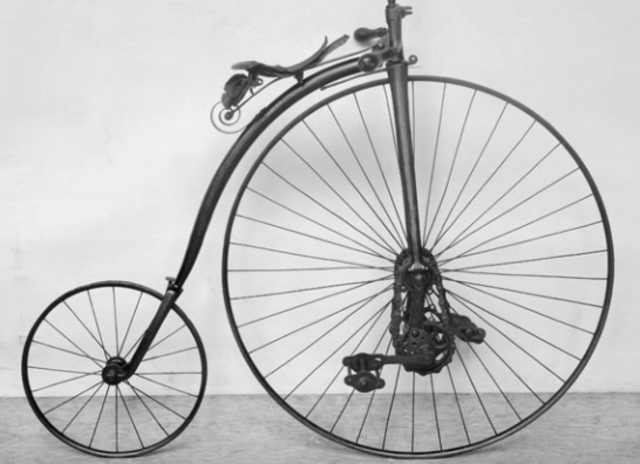
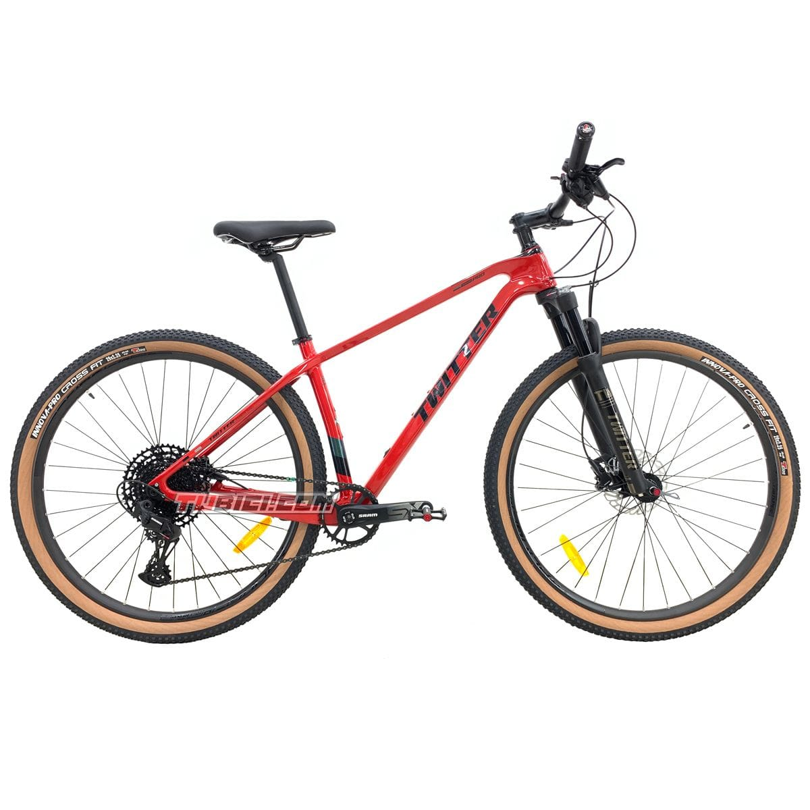
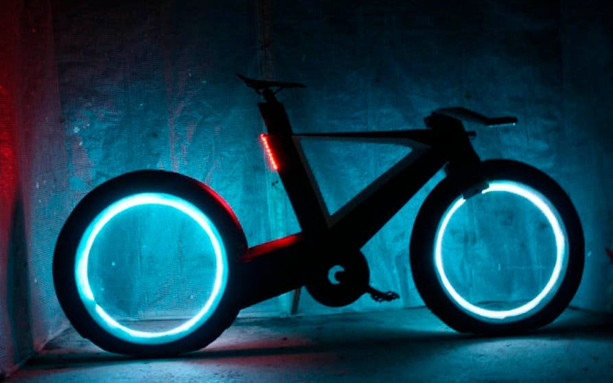

La paternidad/creacion de la bicicleta se le atribuye al barón, escritor e inventor aleman
Karl Friedrich Christian Ludwig Freiherr Drais von Sauerbronn,
nacido el 29 de abril de 1785

podemos decir que se invento en el siglo XIX wn 1818

La bicicleta, coloquialmente llamada bici, es un vehículo
de transporte personal de propulsión humana.

Es impulsada por el propio viajero, que acciona el vehículo con el esfuerzo muscular de las piernas,
en particular mediante pedales o manivelas. Sus componentes básicos son dos ruedas,
generalmente de igual diámetro y dispuestas en línea, un sistema de
transmisión de pedales, un cuadro que le da la estructura e integra los
componentes, un manillar para controlar la dirección y un
sillín para sentarse.